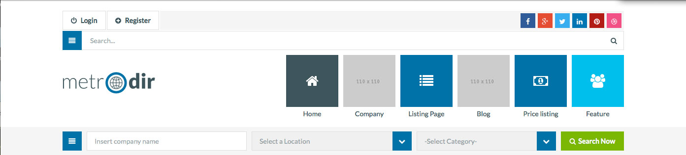

GENERAL
MetroDir – Directory & Listings Wordpress Theme is a content driven portal that is ideal for listing any kind of entity or activity on a Global or Local basis.
CHANGING COLOR SKIN
Metrodir offers four skins to choose from. In order to change the default one, you need to add a child css file link inside the HEAD tag, like:
<link rel="stylesheet" type="text/css" href="css/style-third-pallet.css">
Remember that it needs to be placed after a default css file link, which looks like:
You will need to do this for all HTML files, but you can use something like "mass replace in files" function of your text editor ("Search / Find in Files..." if you are using Notepad++) to make it quick.
REMOVING STYLE SWITCHER
Style switcher is used to demonstrate all color skins on demo page, so most probably you don't want to have it on your live site. To do this, you need to open the js/script.js file, scroll down to STYLE SWITCHER section and delete all the code inside it.
CHANGING LAYOUT VERSION
This template comes with two layout variations. Default one is 'fullsize'. The variation can be choosed by editing class of the MAINSECTION tag in each HTML file. In order to use 'boxed':
<div id="main-section" class="boxed">
If you want to choose a 'classic' version just delete mentioned class 'boxed'
We use the GMap3, goMap jQuery plugins for handling Google Maps easily. The maps are visible for example, on contact. Using them is very easy, but each map needs to be configured separately.
Every map is defined in the similar way in js/script.js file, for example:
$("#map_canvas_contact").each(function initialize() {
$(this).goMap({
maptype: 'ROADMAP',
scrollwheel: false,
navigationControl: false,
zoom: 5,
markers: [{
latitude: 46.454889270677576,
longitude: 7.45697021484375,
icon: 'img/map-marker-contact.png',
html: 'Metrodir'
}]
});
});
You can define the width and height of the map and specify the marker points. If you want to add overlays, custom events or even more, take a look on this plugin documentation here: http://gmap3.net/ and http://www.pittss.lv/jquery/gomap/
Here is a list of third-party resources that we use:
JavaScript